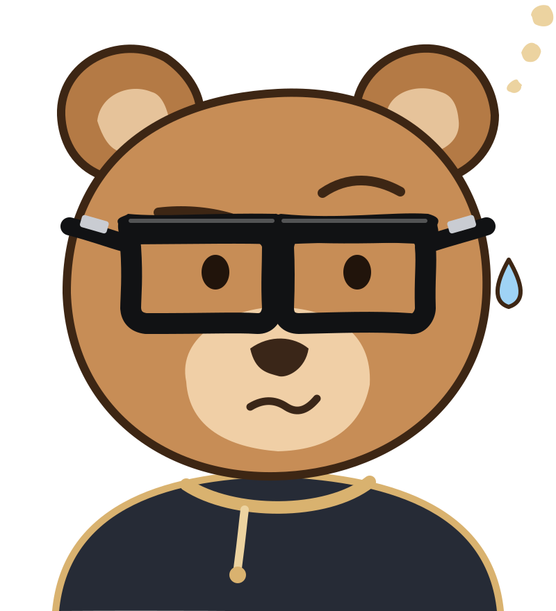

Définitions
Les définitions à savoir réciter à l'écrit, épreuve par épreuve. Celles marquées « À savoir par cœur » passent en premier ; le badge « Tombée » donne les années où la définition a été demandée au BTS. En révision, une carte pas sue revient jusqu'à ce que tu la saches, et une carte sue se range dans un tiroir : elle revient le lendemain, puis elle est acquise.

À savoir par cœur seulement
Déjà tombées seulement
Elle revient : tu ne la savais pas tout à l'heure.
Récite la définition dans ta tête (ou à voix haute), puis retourne la carte.
Astuce : Espace pour retourner, puis → je savais ou ← à revoir. Une carte « à revoir » revient quelques cartes plus loin.
Quelle carte donne la bonne définition ?
Astuce : choisis avec les touches A B C D, puis Entrée pour continuer.